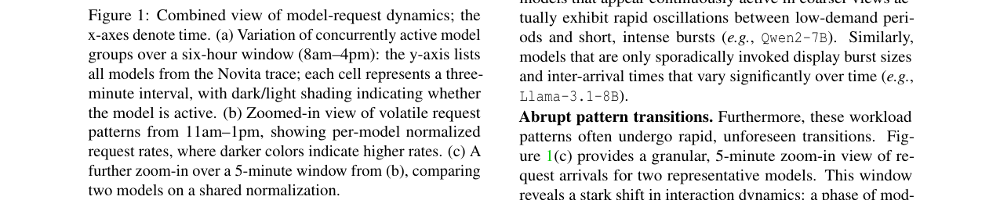
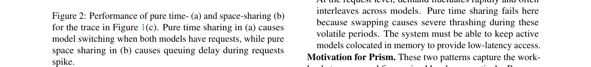
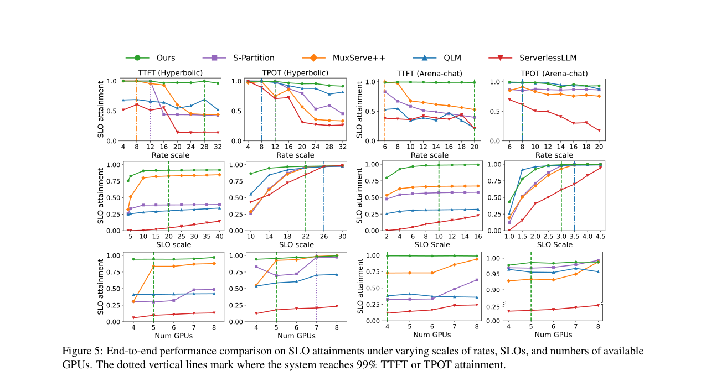
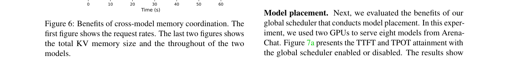
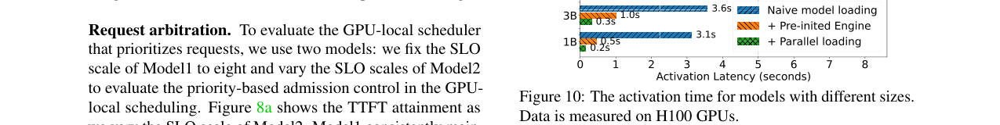
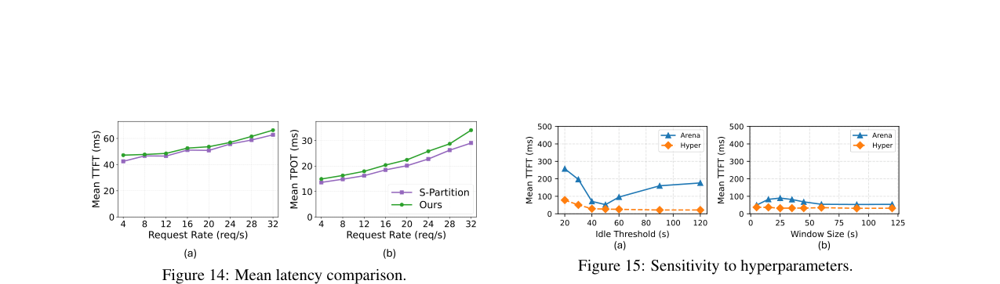
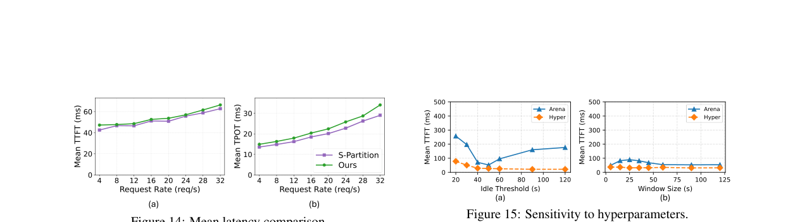

Prism: Cost-Efficient Multi-LLM Serving via GPU Memory Ballooning
总结
随着推理服务提供商必须维护大量低流量但至关重要的模型，且代币价格不断下降，资源效率变得日益重要。生产环境中的流量分析揭示了动态的“突发群组”模式，即一组模型会同时活跃并随时间转移；现有的空间共享和时间共享方法缺乏适应这种变化的原则性机制，迫使在服务等级协议（SLO）遵守和效率之间做出权衡。
As-is：当前的空间共享（如 MuxServe）将多个模型驻留在同一 GPU 上以利用未使用的内存，但在模型长时间空闲时会导致严重的内存碎片化；时间共享（如 QLM）通过在 GPU 内存和 CPU DRAM 之间交换模型来处理突发流量，但在请求快速波动或交错活跃时，由于模型切换的延迟开销（数秒），会导致严重的抖动和 SLO 违规。
To-be：Prism 是一个以内存为中心的 LLM 共享框架，它利用内存膨胀技术统一了空间和时间共享。通过其气球驱动程序 kvcached，Prism 能够跨模型回收内存，并在单一方案下支持这两种共享模式。Prism 实现了高达 3.3 倍的 TTFT SLO 达成率和 2 倍的 TPOT SLO 达成率，在相同 GPU 数量下，相比基线实现了超过 2 倍的成本降低或 3.5 倍的请求吞吐量提升。
背景
在线 LLM 推理服务必须与用户或下游应用实时交互，因此提供商强制执行严格的服务等级协议（SLO）以保证用户体验。两个关键的延迟指标定义了这些目标：首先是 TTFT（Time-To-First-Token），即处理输入提示并生成第一个标记的延迟，这对聊天机器人等交互式应用至关重要；其次是 TPOT（Time-Per-Output-Token），即自回归生成过程中平均的标记间延迟，对于确保文本生成流畅且符合人类阅读速度至关重要。
LLM 推理本质上是内存受限的，GPU 内存主要由模型权重和 KV 缓存主导。模型权重巨大（例如，一个 70B 参数的模型在 FP16 下需要约 140GB 内存）。为了提高 GPU 内存效率，主流 LLM 推理系统采用 PagedAttention，它将每个请求的 KV 缓存分割成固定大小的块，存储在非连续的物理内存中。SGLang 和 vLLM 等框架通过预留大型 PyTorch 张量作为 KV 块池来实现这一点。然而，这种设计在单模型内部管理内存效率很高，但无法跨模型边界回收未使用的内存，限制了多模型共享的灵活性。
问题
通过对来自 Hyperbolic、Novita AI 和 Chatbot Arena 的生产环境流量进行详细分析，我们发现多 LLM 推理工作负载表现出与现有单一策略相冲突的复杂动态特征。
模型层面的动态：突发群组
部署的模型表现出“突发群组”行为。当发生突发时，请求集中在特定的一组模型上，且该子集随时间快速转移。在 Novita AI 的流量中，模型平均有 70% 以上的时间是空闲的。在四个追踪数据集中，平均有 23%–50% 的模型同时活跃，且活跃集合每小时变化 54–766 次。这种模式是由现代复合 AI 系统和智能体管道驱动的，其中大型通用模型作为中心推理组件保持活跃，而较小的蒸馏模型作为辅助组件被间歇性触发。
请求层面的动态：动态且易变
请求流极其动态和易变，波动迅速且不可预测。即使在粗粒度视图中持续活跃的模型，实际上也表现出快速的振荡（低需求期与短促的密集爆发）。请求模式经常发生急剧、不可预测的转换，例如从两个模型的交错活动突然转变为单个模型的密集爆发。这种波动性使得纯时间共享策略失效，因为在交错活跃期间，系统必须不断驱逐和重新加载权重，导致模型抖动，延迟开销主导了执行时间。
现有方法的失效
我们使用 Figure 1(c) 的片段测试了纯时间共享（QLM）和纯空间共享（静态分区）策略。
* 纯时间共享：在交错活动阶段，由于两个模型频繁重叠请求，系统被迫反复驱逐和重新加载权重。这导致严重的模型抖动，GPU 花费更多时间在 PCIe 传输和引擎重新初始化上，导致请求队列迅速增长，在负载达到峰值之前就引发了 SLO 违规。
* 纯空间共享：虽然避免了交换开销，但在工作负载转变为突发阶段时彻底失败。当一个模型变得空闲时，其模型权重保持锁定，阻止了当前活跃的模型利用全部 GPU 容量。这种刚性隔离创造了人为的资源稀缺，导致活跃模型在 KV 缓存内存方面饥饿，产生显著的排队延迟和 SLO 违规。
结论
生产工作负载的这些冲突要求表明，单一策略无法满足需求。突发群组需要时间共享的弹性来驱逐空闲资源，而波动请求需要空间共享的稳定性来保持活跃模型驻留在内存中以提供低延迟访问。这需要一个能够根据运行时工作负载灵活切换策略的设计，将 GPU 内存视为动态共享资源，而不是静态分区。


解决方案
Prism 是一个以内存为中心的 GPU 共享系统，旨在实现成本效益高的多 LLM 推理服务。其核心设计包括一个气球驱动程序（kvcached）以实现灵活的跨模型内存共享，以及一个内存中心控制平面来优化资源分配。
1. GPU 内存膨胀
为了解决现有 LLM 推理引擎（如 SGLang）在单模型设计下无法跨模型回收内存的问题，Prism 引入了一个名为 kvcached 的气球驱动程序。它位于推理引擎和 GPU 内存之间，充当虚拟化内存管理器。
* 虚拟与物理内存解耦：kvcached 为每个引擎预留一个大的连续虚拟地址空间，但在物理层面上，它仅在需要时分配和映射 GPU 内存页面。这允许内存根据需求动态扩展和收缩，粒度为 2MB。
* 统一管理：kvcached 统一管理模型权重和 KV 缓存池。当模型被驱逐时，其权重占用的物理内存被释放；当模型被激活时，它可以从其他模型回收内存。
* 自动 Token 块映射：为了支持不同架构（不同的层计数和 Token 大小），kvcached 内部有一个 KV 缓存管理器，将 Token 块映射到虚拟和物理页面，并确保不同模型的 Token 块隔离。
* 弹性张量抽象：kvcached 实现了“弹性张量”（eTensor），通过 PyTorch 扩展接口抽象物理页面分配的细节。这使得现有的注意力内核无需修改即可使用，并保持与 CUDA 图优化的兼容性。
* 优化：kvcached 通过重组内存布局（将所有层的 K 和 V 向量连续存储）减少分配开销，使用预分配线程缓冲区，并使用 2MB 内存页面以减少碎片。
2. 快速模型加载
模型交换的速度直接影响 GPU 共享的灵活性。Prism 通过以下方式最小化冷启动延迟：
* 引擎池：在每台 GPU 上维护一个引擎池，预初始化引擎和虚拟地址空间。当模型被激活时，从池中选择一个可用引擎，避免重新初始化的开销。
* 并行权重加载：将模型权重分块，在节点内的多台 GPU 上并行加载，然后通过 NVLink 高速互连聚合到目标 GPU。这显著加速了模型加载过程。
3. 内存中心控制平面
为了在统一共享下最大化 SLO 达成率，Prism 采用分层调度策略，以内存竞争为核心优化目标。
* 负载感知模型放置：
* 目标：最大化 GPU 的内存余量以支持内存膨胀。
* KV 压力比 (KVPR)：量化 GPU 上的内存竞争强度。公式为 $w_{token\_rate} / shared\_kv$，其中 $w_{token\_rate}$ 是模型的 SLO 加权 Token 使用率。
* 算法：Prism 按照模型的 SLO 加权 Token 使用率降序排序，然后为每个模型选择使 KVPR 最小的 GPU。这确保了高需求模型与低需求模型互补放置。算法还支持张量并行（TP）的反亲和性约束。
* 时延感知请求仲裁：
* 目标：在本地 GPU 上协调内存使用，优先处理对 SLO 最关键的请求。
* 机制：使用共享的每 GPU 请求队列代替每个模型的独立队列。
* 时延松弛：利用请求的精确时间松弛（截止时间 - 所需执行时间）进行优先级排序。当内存不足时，从队列中移除执行时间最长的请求，以释放内存给更紧急的请求。
测试结果
我们在 SGLang 上实现了 Prism，并在包含 58 个不同架构和大小模型的 GPU 集群（最多 32 个 H100 GPU）上，使用来自 Hyperbolic、Novita AI 和 Chatbot Arena 的生产流量进行了全面评估。
SLO 达成率提升
Prism 显著提高了 SLO 达成率。在相同的 GPU 数量下，Prism 相比基线实现了高达 3.3 倍的 TTFT SLO 达成率 和 2 倍的 TPOT SLO 达成率。

成本效率
在目标 SLO 达成率相同的情况下，Prism 相比最先进的方法实现了超过 2 倍的成本降低 或 3.5 倍的请求吞吐量。
跨模型内存协调的益处
通过跨模型协调内存，Prism 能够有效管理 KV 内存大小并减少抖动。Figure 6 展示了在动态请求率下，Prism 相比纯空间共享在 KV 内存使用和系统稳定性上的优势。

模型激活时间
Prism 的快速模型加载机制在 H100 GPU 上表现优异。Figure 10 显示，对于不同大小的模型，Prism 的激活时间保持在较低水平，确保了在突发流量下的快速响应能力。

延迟与超参数敏感性
Figure 14 展示了 Prism 与基线方法的平均延迟对比，证明了其在保持高吞吐量的同时有效控制了延迟。Figure 15 展示了系统对不同超参数的敏感性分析，表明该设计具有良好的鲁棒性。

